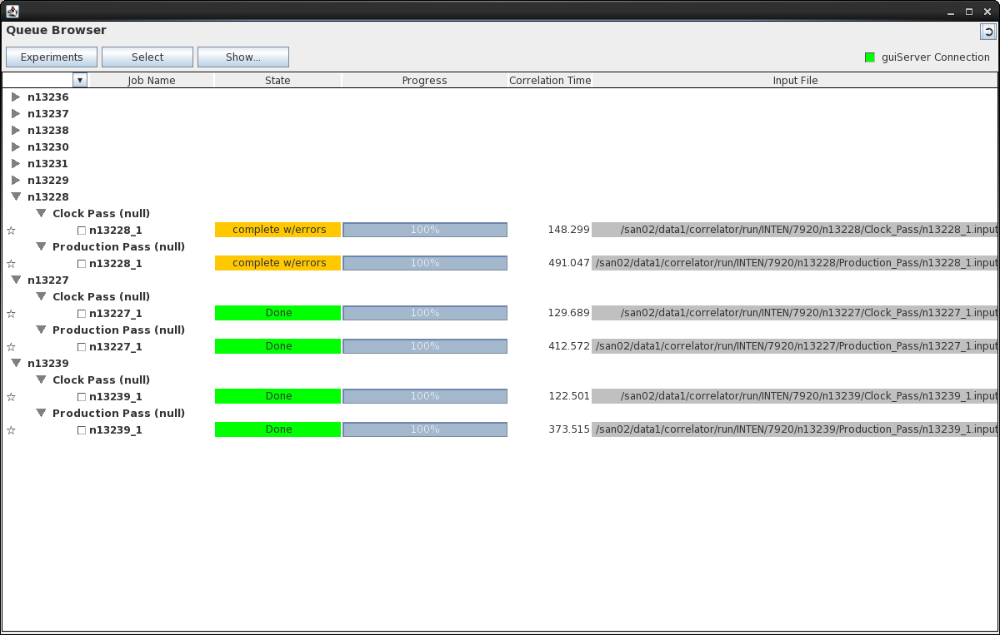
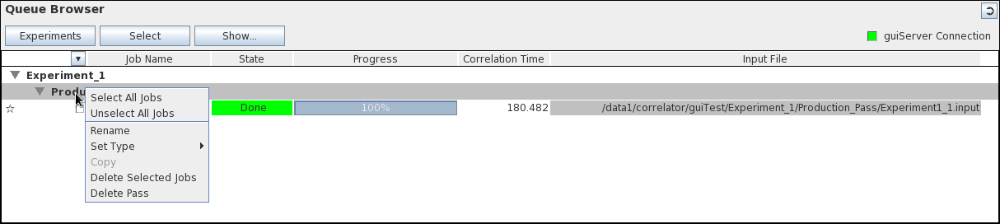
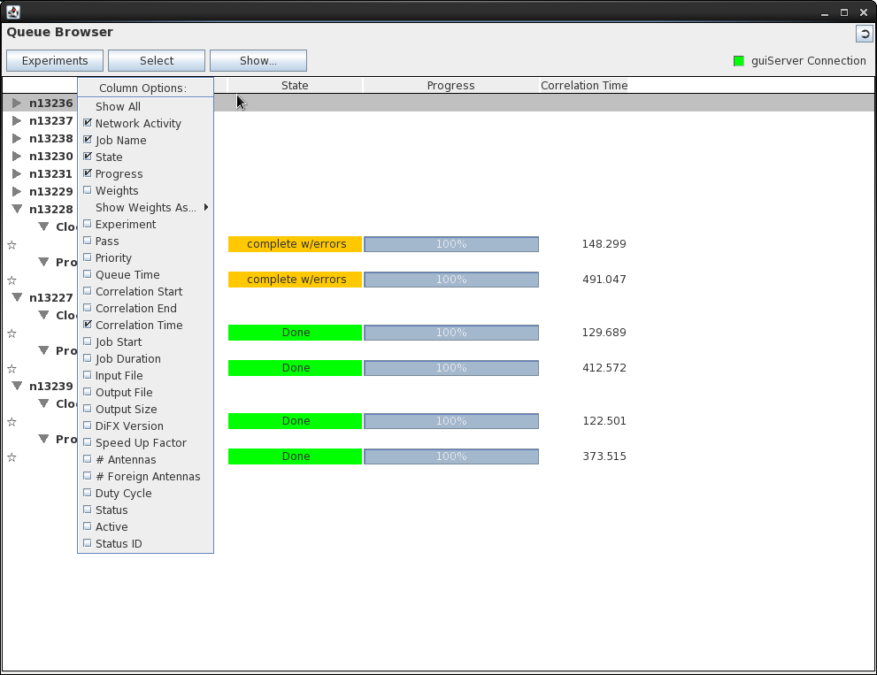
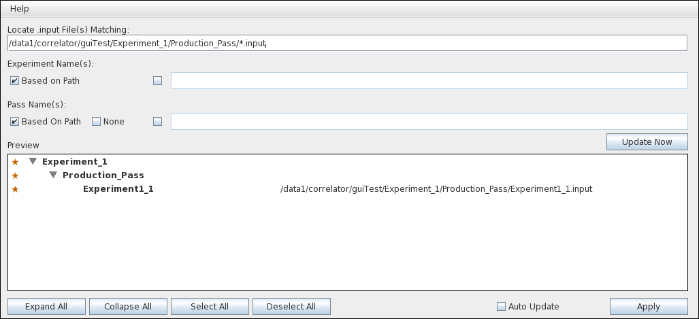
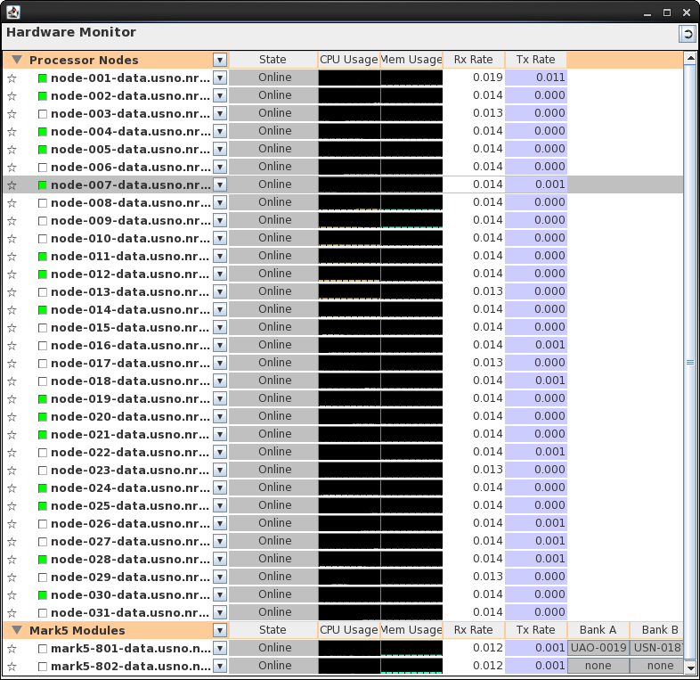
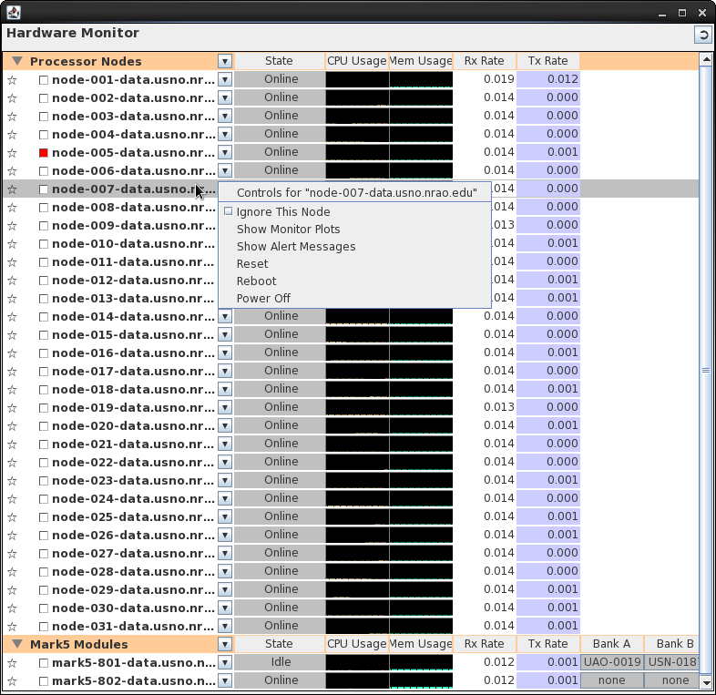
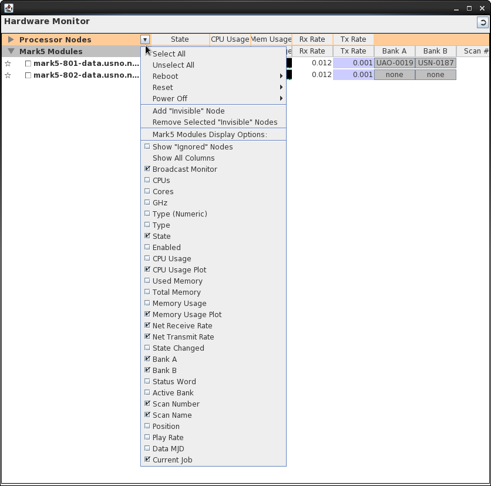
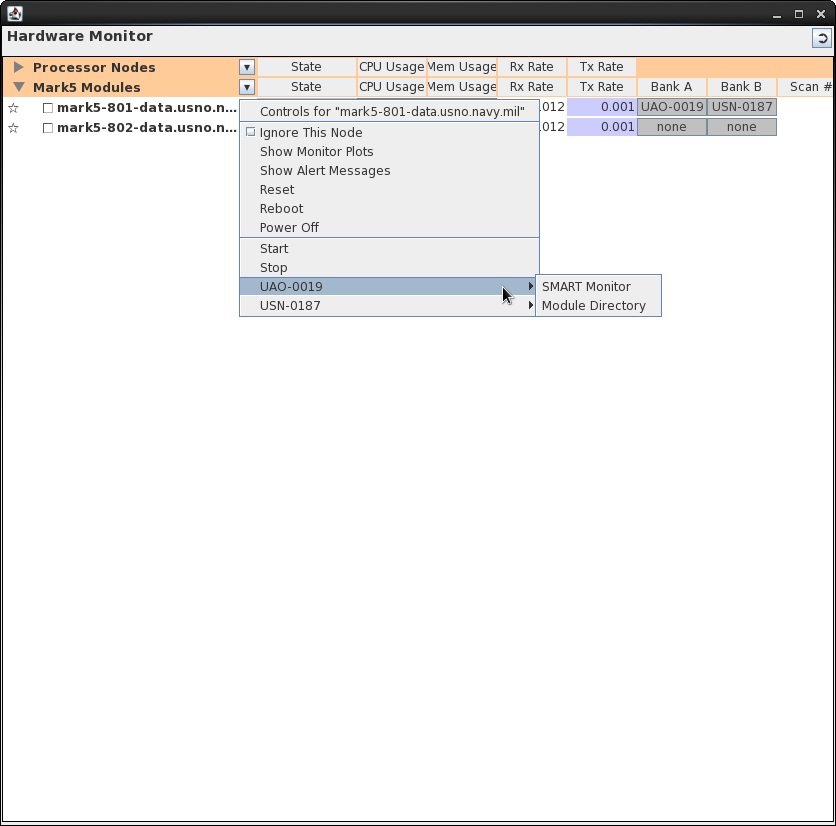
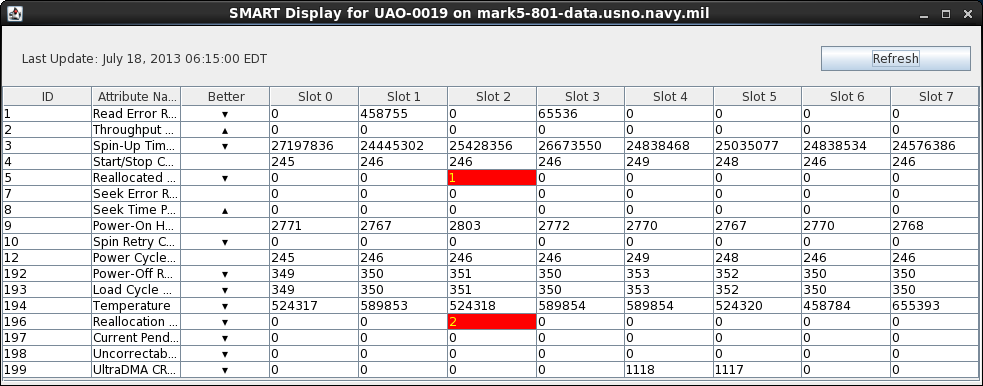

GUI Main Window

The DiFX GUI main window is the only window visible when the GUI
is first launched. It contains three components that
provide top-level information about the DiFX correlator
hardware, correlation jobs, and current correlation activities.
- The Queue Browser shows a list of correlation jobs and
their run status.
- The Hardware Monitor shows the status of the processing
nodes and Mark 5 units in the correlator.
- The Message Window displays messages produced by DiFX
software.
The dividers between the three components of the main window can
be moved around to allocate different fractions of the window
real estate to each (these changes, as well as changes in the
overall window size, will be remembered by the GUI settings file
between sessions). In addition both the Queue Browser and
the Hardware Monitor have "tear-off" buttons that allow them to
become separate windows (they can also be re-attached using the
same buttons).
Queue Browser
The Queue Browser displays information about DiFX jobs - jobs that
are processed by DiFX and jobs that the GUI user has specific
interest in. Controls can be launched from jobs listed in the
Queue Browser to start and stop DiFX processing of them, edit their
properties, monitor their progress, or simply learn detailed
information about them. The browser provides tools to allow
you to create, delete, edit, and move experiments, passes and jobs.

The
"Browser" Part: Experiment/Pass/Jobs List
The Queue Browser organizes DiFX activities in a hierarchy of
"experiments", "passes", and "jobs", an organization that is
mirrored in the directory structure on the DiFX host. At the
highest level the Queue Browser contains a list of experiments, each
of which can contain any number of passes, within which are a number
of jobs. From the bottom up, each job exists in one and only
one pass, and each pass exists in one and only one experiment.

Experiments
An "experiment" is based on a single set of observations as
contained in a single .vex file. It has a set of
defined data sources (modules, files, or active e-transfers), and
a working directory location associated with it where all
associated files and sub-directories reside. It contains one
or more passes.
Passes
A "pass" contains a subset of the "scans" or "jobs" in an
experiment, along with a .v2d file containing the
parameters that make the pass unique within the experiment.
The .v2d
file is created by the GUI based on the settings in a series of
menu options and fields. Each pass has a
sub-directory associated with it under the directory of its parent
experiment containing the .v2d file, the .input
files associated with each job in the pass, and any results
generated.
Jobs
Each job can be used to run a single DiFX correlation
process. A job has an .input file associated with it,
contained in the sub-directory of its parent pass. All of
the jobs in a pass are generated from the .v2d
and .vex
files using vex2difx,
which produces the .input files. Jobs can be
run individually, or in groups, either in the working directory
structure or in a separate "staging area".
"Experiments" and "Passes" can be closed in the browser to reduce
clutter (click on the little arrow). Each of these types of
items has a control menu associated with it - these menus can be
generated by right-clicking on the line containing the item.
Details on each follow:
Experiment Menu
- Select All Jobs/Unselect All Jobs: can be used to add
or subtract all jobs in the experiment from the selection
scheme, which is described here.
- Edit Properties: This is probably the most useful
item in this menu. It will bring up the Experiment Editor
for this experiment, pre-filled with values appropriate for
this experiment. It can be used to generate a new pass
with new jobs.
- Delete Selected Jobs: This will delete any jobs
within the experiment that have been "selected".
- Delete Experiment: The second most useful item.
The experiment will be hunted down and removed wherever it
exists - on disk on the DiFX Host, in the database if that is
being used. There will be no more experiment. Use
with care.
Pass Menu

- Select All Jobs/Unselect All Jobs: can be used to add
or subtract all jobs in the pass from the selection scheme,
which is described here.
- Rename: This option simply changes the name of the
pass. Apparently at some point in the GUI development
process this ability was felt to be important enough to merit
a button.
- Set Type: Another historical button. This
changes the "type" of the pass, which has no effect on
processing.
- Delete Selected Jobs: This will delete any jobs
within the pass that have been "selected".
- Delete Pass: This removes the pass from the browser
and deletes any directories and files associated with it on
the DiFX host.
Job Menu

- Controls for [Experiment Name]: Launch the Job
Control Window for this experiment. This window can be
used to control the start parameters of the job, start and
stop it, and monitor it. Described in detail here.
- Real-time Job Monitor: Launch a Real-time Monitor
Window for this job. The real-time monitor is described
here.
- Toggle Selection: Select the job if it is not
selected, un-select it if it is selected. Selections are
described here.
- Delete: Completely delete the job and all of its
associated files. This process cannot be reversed.
- Start: Start the job using existing settings (this is
equivalent to opening the Job Control Window and just hitting
"Start" without changing anything).
- Stop: Attempt to stop a running job. Sometimes
this works, sometimes it doesn't.
Job Information
While the "Experiment" and "Pass" lines in the browser contain
little more than the names assigned to them, the "Job" line
contains detailed information about each job. The Job
information is organized in columns that can be manipulated using
the column header at the top of the browser field. Columns
can be resized by clicking and dragging the boundaries between
them, removed using the small "delete" buttons that appear when
the mouse hovers over them, or information columns can be added
using the header menu. To generate the header menu, right
click on the header line or push the arrow button on the left side
of the header line:

Many of the possible fields simply reflect information that is part
of messages supplied by DiFX - they will only be updated when the
job is running and many of them are not used. Among the more
interesting/useful items are:
Network Activity
Network Activity is in the form of a small "light" box that
flashes green when any messages associated with the job are
received.
Job Name
This is the name given the job when it was created. The
name is usually automatically generated by vex2difx.
Names are unfortunately sometimes redundant - two passes in the
same experiment may repeat the same names. To make matters
more inconvenient, messages from DiFX are associated with a job
using the name, so occasionally the GUI may attribute a message
from one job to another.
State
This is the current state of the job - whether it has been run,
whether it had errors when it was run, whether it is still
running, etc. The GUI makes some effort to make the state
something sensible, with background colors that are appropriate.
Progress
If a job is running, the progress bar will show how far along
it is. Progress is computed based on the time stamp of the
visibility currently being processed compared to the start and
stop time stamps of the job. Whether this is completely
accurate is open to debate.
Weights
Weights show the relative weights of each antenna involved in a
job as it is processing. Weights can be displayed as
numbers or as time-series plots.
Correlation Time
This is the approximate "wall clock" time that a job required
to correlate. It is updated whenever a message for a job
is received from DiFX and is calculated from the time the job
was started.
Input File
The input file field contains the full path to the input file
on the DiFX host, and is the only unique way to identify a job.
This field is filled by the GUI and is not contained in the
messages from DiFX (which is unfortunately because it could be
used to uniquely identify the job associated with them).
Adding Jobs
to the Queue Browser: the Experiment Button
There are a number of ways to add a job to the Queue
Browser. At a very basic level, the only thing required to
add a job is the location of a DiFX .input file.
The GUI uses the full path of the .input file to
uniquely identify a job (since it is, unlike the job "name",
guaranteed to be unique), and the contents of the .input
file to fully describe the job. The Experiment Button on the
Queue Browser provides the following ways to obtain and .input
file, and thus add a job to the visible queue:
Create New: Create A Job From Scratch
A completely new job or list of jobs can be added to the queue
based on a .vex file and a few user settings. The "Create
New..." button will launch the Experiment Editor,
which will lead the user through the process of creating new
experiments, passes, and jobs.
Locate on Disk: Find Existing Experiments on the DiFX Host
The Queue Browser has the ability to locate previously-created
experiments on disk (via the head node) and adding them to the
queue. It does this by locating .input files,
one of which should exist for each existing job on disk.
Assuming an .input file is intact and properly
formatted the GUI can extract all information about its
associated job, edit that information, and run the job.
The Queue Browser panel provides a tool for locating .input
files on disk using the "Locate on Disk..." option under the
"Experiments" menu:

The "Experiment Location" tool provides a field for defining
the directory path of .input files (the field accepts
standard "ls" wildcard rules). Each .input file is assumed
to represent a job. Options are provided for defining the
names of experiments and passes associated with the found
jobs. A preview of all jobs that meet the defined criteria
is given - hitting "Apply" will put these jobs in the Queue
Browser experiment queue. A detailed description of each
field/option/button is below:
Locate .input Files Matching...
This field allows you to specify the directory path for a
"search" for the .input files you are interested in.
The field supports tab-completion, and allows "ls" style
wildcards. When you hit "enter" in this field a search
will be made on the DiFX host for any files that match.
These files are then displayed with their corresponding
experiment and pass structure in the "Preview" area.
Note that .input files always end with ".input".
Experiment Name(s)
The Experiment Name determines the name that will appear on
the Queue Browser. By default this is based on the
directory path on the DiFX Host.
Based on Path
Select this option to keep the name of the experiment
directory.
Specified Name
Select this option to specify your own name (which you do in
the accompanying text field). Changing the name only
changes the Queue Browser - it will not change the directory
name on the DiFX host.
Pass Name(s):
Similar to the Experiment Name settings, the name of the pass
that appears on the Queue Browser can be changed.
Based on Path
The default - use the directory path for the pass on the
DiFX host as the name.
None
This option is used if there isn't a separate pass
directory. Behavior is a little weird if there is
one. Needs to be fixed.
Specified Name
Specify your own pass name.
Preview
The Preview window shows the (approximate)
experiment/pass/job structure that will be added to the Queue
Browser when the "Apply" button is clicked. Individual
items can be selected or de-selected from it by clicking on
the colored symbols at the extreme left of each line - only
selected items will be added to the Queue Browser.
Update Now
This button will perform a new search on the DiFX host based
on your search criteria and display the results in the Preview
field. Hitting enter when changing text fields does the
same thing, so this button is redundant.
Auto Update
Not implemented yet.
This option will trigger a periodic search of the disk for
new jobs using the rules specified in the window. Any
changes to the list of experiments and jobs that meet the
search criteria will be reflected in the Queue Browser - jobs
that are deleted will be removed, new jobs that are created
will appear, etc. This is only necessary if you want
to see changes made by other people (i.e. other instances of
the GUI) in real time - the Queue Browser will show any
changes you make without this option being chosen.
Unless you expect remote changes to be made and wish to see
them you should probably not pick this option as the searches
are resource-consuming.
Apply
The Apply button will instruct the GUI to download the
information for the selected experiments/passes/jobs in the
Preview window and add them to the Queue Browser. The
jobs can then be correlated.
Locate in Database: Obtain a Job From the Database
If you are using the DiFX data base structure (see DiFX
GUI and the Database), previously stored jobs can be
downloaded based on their names, properties, or completion
state.
Note: it has been a long time since any maintenance of the
GUI/Database interaction has been done, and it may not work all
that well.
Monitoring a Job Running Elsewhere
All jobs that are running (i.e. being processed by DiFX) while the
GUI is active produce multicast diagnostic messages detailing
their progress. The GUI (assuming it is set correctly to
monitor multicast traffic) will collect, interpret, and display
the content of these messages in the Queue Browser. If the
job generating the messages is known (already listed in the Queue
Browser), their content will adjust the appropriate job entry in
the Queue Browser display. If the job is not known a
new entry will be created. New entries of this sort will
lack complete detail because their associated .input
file will not be known (its identity is not contained in the
multicast messages). Also the GUI will only be able to
monitor these jobs, not stop or start them (this makes some sense
- any job listed this way was started elsewhere, so presumably
belongs to someone else). Jobs of this type appear under the
heading "Jobs Not In Queue" (maybe that will be changed...).
Select Button
The Select scheme is one of those ideas that seemingly had
promise once, but is now little used. It has not yet been
abandoned, partially because it might one day become useful, but
mostly because it is harmless and what little it does do works
fine.
A job is considered "selected" if the little star character on
the extreme left of the job line in the browser is colored.
Any job can be selected or un-selected by clicking on this
character. Jobs can also be selected or un-selected en-masse
using menu options. The Select Button was meant to provide a
number of things that could be done to all of the jobs that were
currently selected, however about all you can do right now is
delete them (which works). You can also select and un-select
them all.
Show Button
Probably even less functional than the Select Button, the Show
Button was meant to allow the user to choose what types of jobs to
display. In particular, it was meant to allow jobs to be
displayed by "state" - i.e. whether they had been run, completed,
archived or whatever. This is probably a good idea,
ultimately, but is not yet implemented. The options under
the Show Button do nothing at all.
GuiServer
Connection Monitor
The guiServer Connection Monitor provides the status of
the current connection to the guiServer - if it is green
all is well, if it is red then the connection is broken. It
was placed in a prominent location on the Queue Browser because
this browser serves as the "front page" of the GUI, not because it
had anything to do with the rest of the contents.
The guiServer Connection Monitor has a fairly advanced "tooltip"
that lets you know more about the current connection. Hover
over the monitor to generate it.

Hardware Monitor
The Hardware Monitor shows all of the nodes in the
DiFX correlator that are running mk5daemon to broadcast,
via UDP multicast messages, their current state (this is done
using "Difx Load" messages from all nodes and "Mark5 Status"
messages from Mark 5's). Each node detected via these
messages is listed on its own line in the Hardware Monitor (the
nodes are identified by their host name, which is generated by guiServer
based on what it thinks is the source of the message...if the name
changes for some reason a new line will appear in the Hardware
Browser). The GUI tries to determine whether a message comes
from a Mark 5 or a regular processing node based either on the
message type ("Mark 5 Status" messages are assumed to be from Mark
5's), or based on a list of name specifications that the user sets
in the GUI Settings ("Identify
Mark5 Unit Names by Pattern").







Message Window
blah blah blah